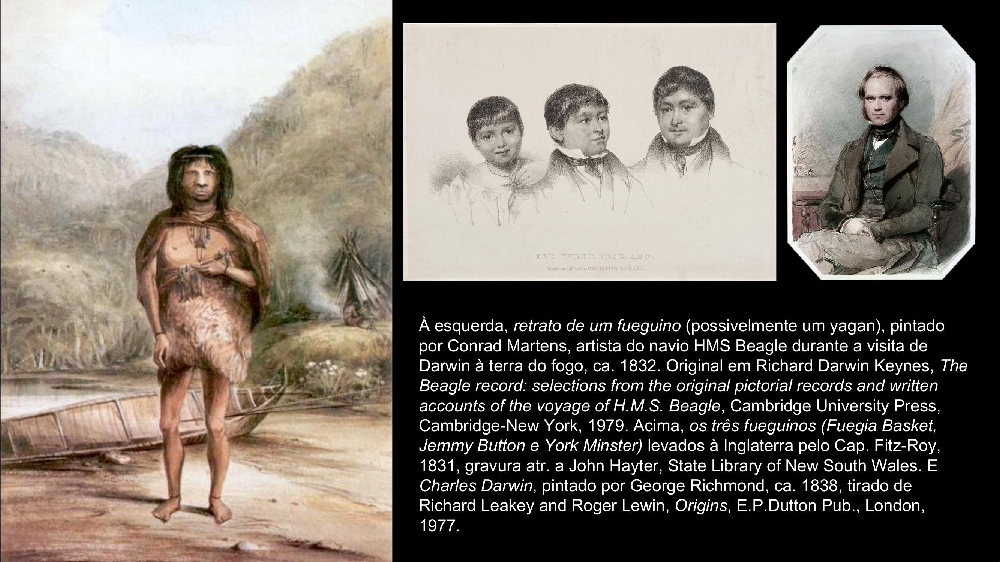
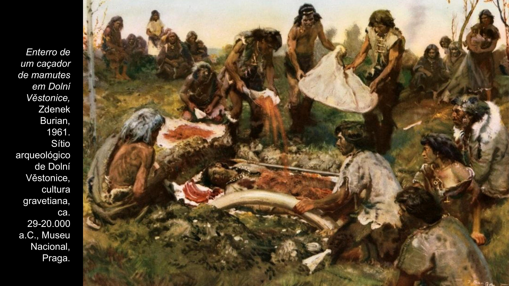
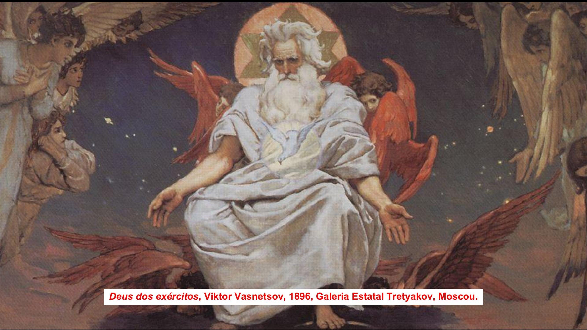
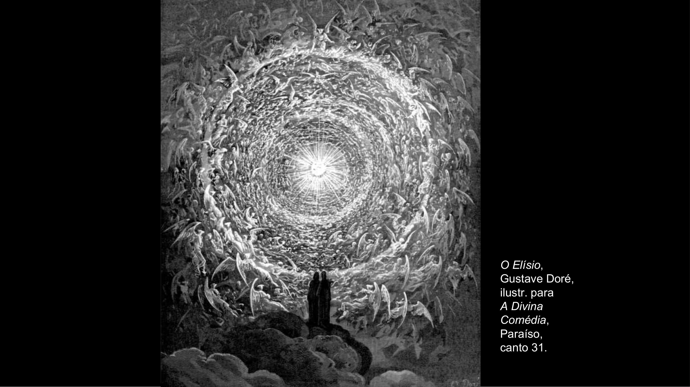

O centro da religiao. A ideia de algo superior ao ser humano e ao mundo impermanente acompanha a humanidade desde as origens mais remotas.
Videoaula Completa
Assista a aula do Prof. Henrique Elfes sobre o centro da religiao — a primeira grande ideia pré-filosófica.

Darwin e os fueguinos: o encontro com povos que pareciam viver nas condicoes mais primitivas — e, ainda assim, possuiam nocao do sagrado.
A esquerda, retrato de um fueguino (possivelmente um yagan), pintado por Conrad Martens, artista do navio HMS Beagle, ca. 1832.
Os tres fueguinos (Fuegia Basket, Jemmy Button e York Minster) levados a Inglaterra pelo Cap. Fitz-Roy, 1831. E Charles Darwin, pintado por George Richmond, ca. 1838.

Enterro de um cacador de mamutes em Dolni Vestonice, Zdenek Burian, 1961. Sitio arqueologico da cultura gravetiana, ca. 29-20.000 a.C., Museu Nacional, Praga.
Enterrar os mortos indica que, de alguma forma, o ser humano e proximo ou participa do sagrado.
A ideia de um algo superior ao ser humano e ao mundo impermanente que o cerca acompanha o ser humano desde as origens.
E numinoso ou misterioso, inspira awe (uma admiracao desmedida e ao mesmo tempo temerosa), e e intocavel: e sagrado.
Esse ser e pessoal, transcendente ao mundo, e autor do mundo e dos homens, e absoluto e poderoso, e bom, justiceiro e vigilante...
Noutros casos, e considerado um poder impessoal ou transpessoal, o mana. E sobrenatural, imensamente vasto, insondavel quanto a natureza, uno em si mesmo mas diferenciado em cada manifestacao.
Enterrar os mortos indica que, de alguma forma, o ser humano e proximo ou participa do sagrado.
A astronomia surge como uma possibilidade de sondar o sagrado e com ele a ordem do mundo, e as estrelas fixas sugerem a existencia de uma atemporalidade imutavel, da eternidade.
A ideia de um algo superior ao ser humano e ao mundo impermanente que o cerca acompanha o ser humano, ao que tudo indica, desde as origens.
A medida que se formam cidades, os deuses se tornam sociais. Sagrado e politico se interpenetram.
Diversos povos tem, dentre os deuses intermediarios, deuses tutelares. Criam-se ritos e religioes publicas, com templos e lugares de veneracao.
Simultaneamente, criam-se mitos, narrativas que explicam o mundo e o proprio ser humano. Formam-se assim as grandes religioes da Antiguidade.
A partir de 3.000 a.C., surge algo novo: ao contrario das religioes miticas, surge a Revelacao, firmemente ancorada na escrita e na historia, e associada a um codigo moral (ethos, mos).
Ha um canon das Sagradas Escrituras e um enorme aparato institucional de ensino e interpretacao. Iahweh conecta com o Deus Altissimo dos povos mais primitivos. A religiao revelada de Israel culmina em Jesus Cristo.

Deus dos exercitos, Viktor Vasnetsov, 1896, Galeria Estatal Tretyakov, Moscou. A imagem do Deus pessoal, transcendente, que se revela ao homem.
Na era axial (secs. VI-V a.C.) inicia-se uma lenta substituicao do modo de pensar narrativo-metaforico por outro mais racional.
Inicia-se uma lenta e gradual substituicao do modo de pensar narrativo-metaforico por outro mais racional, o que levara a um longo e ainda nao concluido processo de substituicao das religioes miticas pelas reveladas.
Parmenides reflete sobre o ser, a que da atributos divinos. Platao descobre o divino como Uno e Bem, e Aristoteles o mostra como Ato puro, Causa incausada e Inteligencia ordenadora.
As bases lancadas por esses filosofos permitirao aos Padres da Igreja e aos teologos medievais criar a exegese das Sagradas Escrituras e a teologia dogmatica — o conjunto de conhecimento mais amplo e abrangente de toda a historia humana.
Foi essencial compreender que so e possivel falar de Deus analogamente, e que Ele pode ser descrito como Ato puro de Ser.

O Elisio, Gustave Dore, ilustracao para A Divina Comedia, Paraiso, canto 31. A visao de Dante: circulos concentricos de luz, anjos e almas contemplando o divino.
Tudo o que a Revelacao apresenta como misterio e analisado e, na medida do possivel, compreendido racionalmente.
Com o nascimento da filosofia moderna, perde-se a nocao da compreensao racional, limitada mas necessaria, de Deus.
Com Duns Escoto e Guilherme de Ockham, perde-se a nocao da compreensao racional, limitada mas necessaria, de Deus. No plano da fe, isso resulta na Revolucao protestante, centrada na angustia de atingir uma certeza da salvacao.
Com Descartes, perde-se a nocao de que Deus e ato puro de ser, e assim Ele passa a ser considerado apenas Ser Supremo.
Bacon constroi o edificio das ciencias experimentais apoiado na evidencia dos sentidos. Como nao ha evidencia dos sentidos para o Ser Supremo, sua existencia e substituida por um naturalismo ateu: o proprio cosmos e sagrado e se explica a si mesmo.
Schleiermacher, teologo luterano, situa a evidencia do Ser Supremo na experiencia interna do eu diante do eterno. Em consequencia, boa parte dos modernos atribui o sagrado a si mesmos.